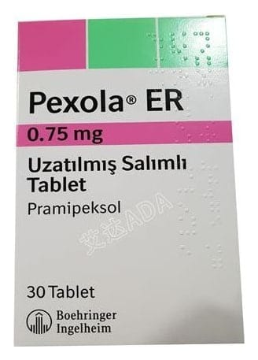

Pexola ER 0.375 mg Uzatılmış Salımlı Tablet

Ne için kullanılır
KT · Bölüm 1PEXOLA ER 0,375 miligram uzatılmış salımlı tabletler, beyaz-kırık beyaz renkli, yuvarlak ve kenarları eğimlidir. Bir yüzünde P1 kodu, diğer yüzde ise Boehringer Ingelheim şirket logosu basılıdır. PEXOLA ER 0,375 miligram uzatılmış salımlı tablet, 30 tablet içeren blister ambalajlarda piyasaya sunulmaktadır.
PEXOLA ER, pramipeksol adı verilen bir ilaç etkin maddesini içerir ve dopamin agonisti adı verilen bir ilaç grubuna dahildir. Bu grup ilaçlar, beyindeki bazı algılayıcıları (dopamin reseptörleri) uyararak etki gösterir. Dopamin reseptörlerinin uyarılması, beyindeki sinir sinyallerini tetikleyerek vücut hareketlerinin kontrol edilmesine yardımcı olur.
PEXOLA ER, primer (ilk defa ortaya çıkan) Parkinson hastalığının belirtilerinin tedavisinde tek başına veya levodopa (Parkinson hastalığında kullanılan diğer bir ilaç) ile birlikte kullanılabilir.